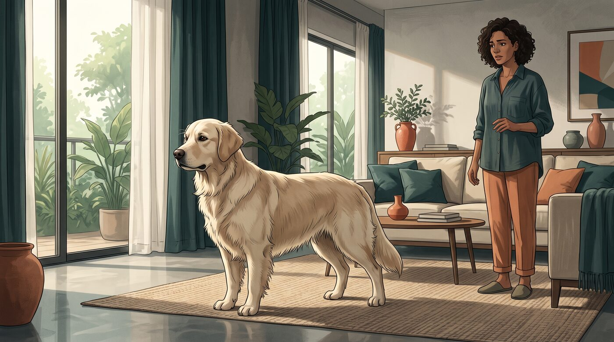
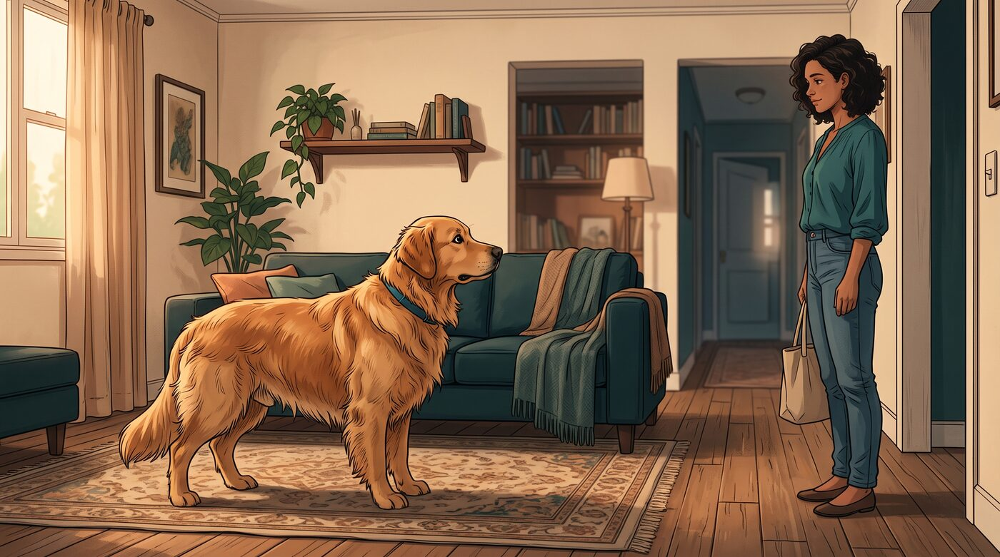
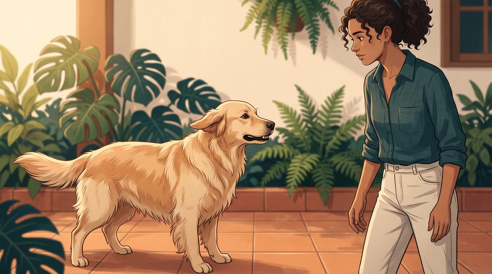
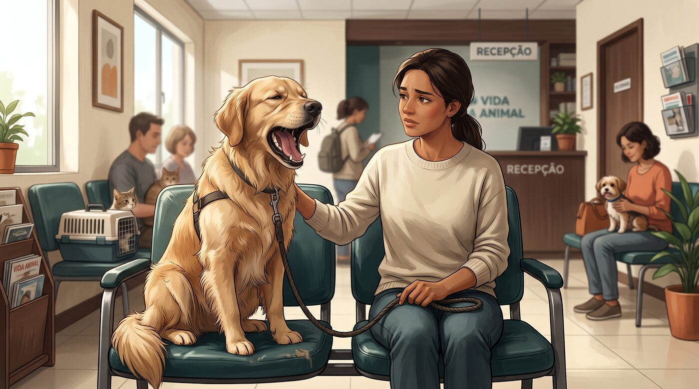
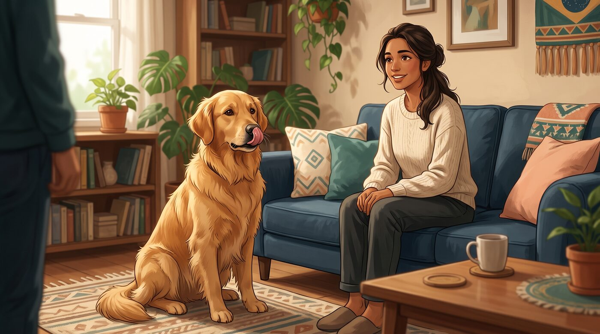
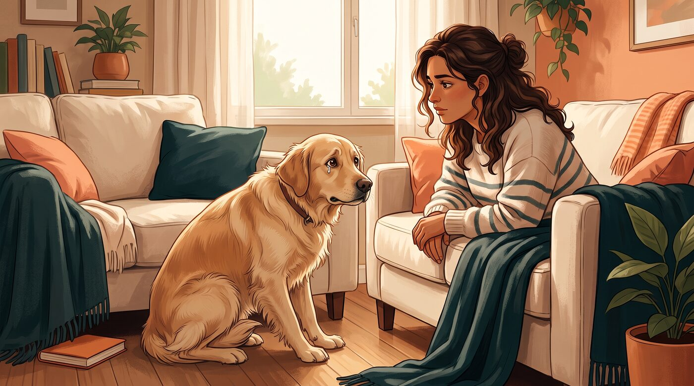

Seu cachorro não precisa rosnar ou tentar fugir para mostrar que alguma coisa está incomodando. Às vezes, o aviso aparece de um jeito bem mais discreto — e passa despercebido.
Ele lambe o focinho, boceja, vira a cabeça, baixa as orelhas ou simplesmente fica imóvel.
O problema é que muitos desses comportamentos são confundidos com sono, "manha" ou até culpa. Na realidade, a linguagem corporal é uma das principais formas de comunicação dos cães, e pequenos sinais podem aparecer antes de uma reação mais intensa.
1. Seu cachorro vira a cabeça ou evita olhar diretamente para você
Imagine que você se aproxima para fazer carinho e seu cachorro vira o rosto.
É fácil interpretar isso como desinteresse.
Mas, dependendo do contexto, pode ser uma forma de dizer: "Isso está um pouco demais para mim."
Evitar o contato visual, virar a cabeça ou olhar para o lado pode aparecer quando o cão está desconfortável, inseguro ou tentando diminuir a tensão de uma situação.
Isso não significa que toda vez que seu cachorro olha para o lado esteja estressado. Ele pode simplesmente ter percebido um barulho ou estar interessado em outra coisa.
Por isso, o segredo está em observar o conjunto da linguagem corporal, e não um sinal isolado.
2. Ele começa a lamber o focinho sem estar comendo

Esse é um dos sinais mais fáceis de passar despercebido.
Se acabou de colocar comida na frente dele, lamber os lábios é perfeitamente esperado.
Mas imagine outra situação: alguém desconhecido se aproxima, você segura seu cachorro para uma situação que ele não gosta e ele começa a passar rapidamente a língua pelo focinho.
Nesse contexto, o significado pode ser completamente diferente.
A lambida rápida dos lábios pode aparecer como sinal de desconforto ou estresse, especialmente quando acompanhada por outros comportamentos, como evitar o olhar, abaixar as orelhas ou tentar se afastar.
É um daqueles pequenos detalhes que começam a fazer sentido quando você aprende a observar o cachorro inteiro.
3. Ele boceja mesmo sem estar com sono

Você fala com seu cachorro, ele olha para você e... boceja.
"Está com sono", você pensa.
Pode ser. Mas nem sempre.
Cães também podem bocejar em situações de tensão, excitação ou desconforto. Um cachorro pode fazer isso durante uma consulta veterinária, diante de uma situação nova ou quando está sendo submetido a uma interação que considera difícil.
O contexto novamente é fundamental.
Um bocejo enquanto ele está deitado confortavelmente depois de uma caminhada provavelmente não significa a mesma coisa que vários bocejos acompanhados de lambidas no focinho, orelhas para trás e tentativa de se afastar.
É a combinação que conta.
4. As orelhas e o rabo começam a mudar de posição

A cauda abanando não significa automaticamente que o cachorro está feliz.
Esse é um dos maiores equívocos sobre linguagem corporal canina.
Abanar o rabo significa que o cão está emocionalmente ativado, mas essa ativação pode estar relacionada a entusiasmo, excitação, frustração ou outras emoções. A velocidade, a posição da cauda e o restante do corpo ajudam a interpretar a situação.
O mesmo vale para as orelhas.
Um cachorro relaxado geralmente apresenta uma postura corporal solta. Já um cão desconfortável pode abaixar ou puxar as orelhas para trás, especialmente quando outros sinais aparecem simultaneamente.
Por isso, não olhe apenas para o rabo.
Observe rabo + orelhas + olhos + postura + contexto.
5. Ele fica rígido ou simplesmente "congela"

Esse é um sinal que merece bastante atenção.
Um cachorro que fica repentinamente imóvel, com o corpo rígido, pode estar experimentando um nível importante de estresse.
Às vezes, o tutor interpreta isso como "ele está obedecendo".
Mas existe uma diferença entre um cachorro sentado tranquilamente porque aprendeu um comando e um cachorro que parece ter travado diante de uma situação desconfortável.
O congelamento pode aparecer quando o animal não sabe como responder ao que está acontecendo.
Nesse momento, insistir, aproximar-se ainda mais ou puni-lo pode aumentar a tensão.
Dar espaço pode ser uma resposta muito mais segura.
6. Ele mostra os dentes ou rosna — e isso não significa simplesmente "cachorro agressivo"

Talvez esse seja o sinal que mais assuste os tutores.
O cachorro rosna e imediatamente recebe uma bronca.
Mas o rosnado pode ser justamente uma forma de comunicação.
Ele pode estar dizendo que está desconfortável, assustado, com dor ou querendo aumentar a distância entre ele e aquilo que considera ameaçador.
Punir o rosnado pode ser um erro.
Se você elimina o aviso sem resolver aquilo que está causando o desconforto, pode acabar com um cachorro que continua sofrendo, mas deixa de avisar de maneira tão clara.
Isso não significa que um rosnado deva ser ignorado.
Muito pelo contrário.
Ele deve ser levado a sério.
Afaste-se de maneira segura, identifique o possível gatilho e, se o comportamento for recorrente ou intenso, procure orientação profissional.
7. O mais importante é olhar para o conjunto

Talvez seu cachorro lamba o focinho.
Outro dia ele boceja.
Em uma determinada situação, abaixa as orelhas.
Nenhum desses sinais, isoladamente, permite concluir que ele está sofrendo.
É preciso observar o contexto.
Um cachorro pode bocejar porque está cansado. Pode lamber o focinho porque acabou de comer. Pode virar a cabeça porque ouviu alguma coisa.
Mas quando vários sinais aparecem juntos — especialmente em resposta a uma pessoa, ambiente ou situação específica — eles passam a contar uma história diferente.
Uma combinação como:
- Orelhas para trás
- Cauda baixa
- Corpo rígido
- Lambidas repetidas no focinho
- Evitação do olhar
- Tentativa de se afastar
- Bocejos frequentes
pode indicar que aquele momento está sendo desconfortável para o animal.
Seu cachorro fala. Só não usa palavras.
Depois que você começa a observar a linguagem corporal, algumas situações do dia a dia mudam completamente de significado.
Aquele cachorro que parecia "teimoso" talvez estivesse desconfortável.
O que parecia "culpa" talvez estivesse apenas reagindo ao seu tom de voz.
O que parecia "agressividade do nada" pode ter sido precedido por vários sinais que passaram despercebidos.
Isso não significa que você precisa ficar analisando cada movimento do seu cachorro como se estivesse decifrando um código.
A ideia é muito mais simples: aprenda a perceber quando ele está confortável — e quando está pedindo espaço.
Quanto melhor você entende esses sinais, maiores são as chances de intervir antes que o desconforto aumente.
E existe uma regra especialmente importante: se houver uma mudança repentina de comportamento, sinais persistentes de desconforto, agressividade nova ou suspeita de dor, vale conversar com um veterinário. Alterações comportamentais também podem estar relacionadas a problemas físicos.
Este conteúdo é educativo e não substitui avaliação veterinária ou comportamental. Se seu cachorro apresentar mudança súbita de comportamento, sinais de dor, medo intenso ou comportamento agressivo, procure orientação profissional.